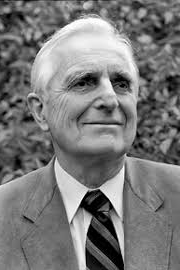

|  |
1997 год Douglas C. Engelbart (1925-2013) «За вдохновляющее предвидение будущего развития интерактивных вычислений и изобретение ключевых технологий, помогающих это предвидение реализовать» |
Страна: США
Образование: Доктор философии в области электротехники, Калифорнийский университет (Беркли), 1955
О лауреате
В 1957 году Engelbart присоединился к Стэнфордскому исследовательскому институту, который предоставил среду для реализации исследовательского центра по расширению человеческого интеллекта (ARC). Этот центр вскоре стал источником многих важных инноваций в области аппаратного и программного обеспечения, таких как: мышь, окна, интегрированная электронная почта, перекрёстное редактирование файлов, телеконференции с разделением экрана, групповая работа с документами – все они были интегрированы в oN-Line System (NLS). Знаменитая «Мать Всех Демонстраций» (“Mother of All Demos”) была впервые продемонстрирована в мае 1968 года, NLS была разработана для обеспечения совместной работы с компьютером. В своих работах Engelbart обнаружил важную особенность, из-за которой некоторые масштабные проблемы продолжают существовать, не смотря на все усилия для их решения. Его принцип изменения масштаба утверждает, что по мере того как сложная система увеличивается, она изменяется не только по размеру, но и по своим качествам. Однако, этот принцип не согласуется с здравым смыслом, что крупномасштабные системы сводятся к мелким частям без потери качеств. Engelbart понял, что внедрение компьютера, как мощного вспомогательного средства для человеческого интеллекта, может превратить количественное изменение в качественное.
Ключевые слова: Interactive computing, Computer mouse, Hypertext, Groupware
Краткая библиография
| 1. |
Engelbart, Douglas C., “Special Considerations of the Individual as a User, Generator, and Retriever of Information”, American Documentation, 1961, Vol. 12, Num. 2 pp. 121-125. Одна из самых ранних работ раскрывающая выражение «Компьютер как проводник». |
| 2. |
Engelbart, Douglas C. and William English, “A Research Center for Augmenting Human Intellect”, AFIPS Conference Proceedings of the 1968 Fall Joint Computer Conference, San Francisco, CA, December 9, 1968, Vol. 33, pp. 395-410. Исторически очень значительная статья, которая является приложением к демонстрации NLS в декабре 1968 года на конференции AFIPS в Сан-Франциско. В ней описывается рабочий прототип NLS и Augmentation Research Center. |
| 3. |
Engelbart, Douglas C., Augmenting Human Intellect: A Conceptual Framework, Report to the Director of Information Sciences, Air Force Office of Scientific Research, Stanford Research Institute, Menlo Park, California, October 1962. Этот отчёт содержит стратегическое видение, которое вело Engelbart в его работах, и является описанием его исследований в ARC. Также в отчете описывается как философия «крестового похода» Энгельбарта, так и прагматика подхода самонастройки. |